Introduction
Network visualizations become dramatically more informative when nodes can display data beyond simple labels. cograph provides powerful pie chart and donut (ring) node capabilities that let you encode multiple data dimensions directly into each node.
What Are Pie and Donut Nodes?
Pie Nodes divide a circular node into colored segments, showing proportional data (like category distributions or composition breakdowns).
Donut Nodes are ring-shaped visualizations that can show: - Progress/completion (single value 0-1) - Segmented data (multiple proportions in a ring) - Layered information (outer donut + inner pie)
When to Use Each Type
| Use Case | Recommended Type |
|---|---|
| Category composition | Pie or Segmented Donut |
| Progress/completion | Simple Donut (fill) |
| Multiple metrics | Double Donut |
| Comparing ratios | Segmented Donut |
| Three+ data layers | Donut + Pie combo |
Visual Comparison
# Create a simple 3-node network for comparison
adj <- matrix(c(0, 1, 0,
1, 0, 1,
0, 1, 0), nrow = 3, byrow = TRUE)
layout <- matrix(c(-1, 0,
0, 0,
1, 0), nrow = 3, byrow = TRUE)
par(mfrow = c(1, 3), mar = c(2, 1, 3, 1))
# Pie node
splot(adj, layout = layout,
pie_values = list(c(0.4, 0.3, 0.3), c(0.5, 0.5), c(0.2, 0.3, 0.5)),
pie_colors = list(c("#E41A1C", "#377EB8", "#4DAF4A"),
c("#984EA3", "#FF7F00"),
c("#FFFF33", "#A65628", "#F781BF")),
node_size = 7,
title = "Pie Nodes")
# Simple donut
splot(adj, layout = layout,
donut_fill = c(0.7, 0.5, 0.9),
donut_color = c("#E41A1C", "#377EB8", "#4DAF4A"),
node_size = 7,
title = "Simple Donuts (Progress)")
# Segmented donut
splot(adj, layout = layout,
pie_values = list(c(0.4, 0.3, 0.3), c(0.5, 0.5), c(0.2, 0.3, 0.5)),
pie_colors = list(c("#E41A1C", "#377EB8", "#4DAF4A"),
c("#984EA3", "#FF7F00"),
c("#FFFF33", "#A65628", "#F781BF")),
donut_fill = c(1, 1, 1), # Use donut mode
donut_inner_ratio = 0.5,
node_size = 7,
title = "Segmented Donuts")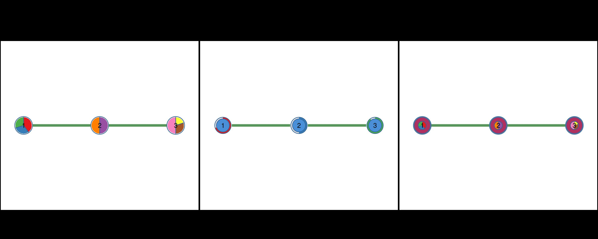
Pie Chart Nodes
Pie chart nodes divide the node area into colored segments proportional to your data values.
Basic Pie Nodes
Use pie_values to specify the proportions for each node.
Values are automatically normalized to sum to 1.
# Simple 4-node network
adj <- matrix(c(0, 1, 1, 0,
1, 0, 1, 1,
1, 1, 0, 1,
0, 1, 1, 0), nrow = 4, byrow = TRUE)
# Each node gets a list of values
splot(adj,
pie_values = list(
c(0.6, 0.4), # Node 1: 2 segments
c(0.3, 0.3, 0.4), # Node 2: 3 segments
c(0.25, 0.25, 0.25, 0.25), # Node 3: 4 segments
c(0.8, 0.2) # Node 4: 2 segments
),
node_size = 6,
title = "Basic Pie Nodes with Different Segment Counts")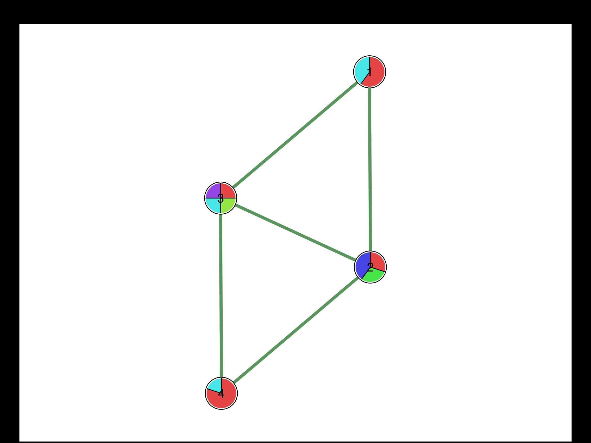
Customizing Pie Colors
Use pie_colors to specify custom colors for each
segment.
# Professional color palette
colors_2seg <- c("#2E86AB", "#A23B72")
colors_3seg <- c("#F18F01", "#C73E1D", "#3B1F2B")
colors_4seg <- c("#1B998B", "#ED217C", "#2D3047", "#FFFD82")
splot(adj,
pie_values = list(
c(0.6, 0.4),
c(0.3, 0.3, 0.4),
c(0.25, 0.25, 0.25, 0.25),
c(0.8, 0.2)
),
pie_colors = list(
colors_2seg,
colors_3seg,
colors_4seg,
colors_2seg
),
node_size = 6,
title = "Pie Nodes with Custom Colors")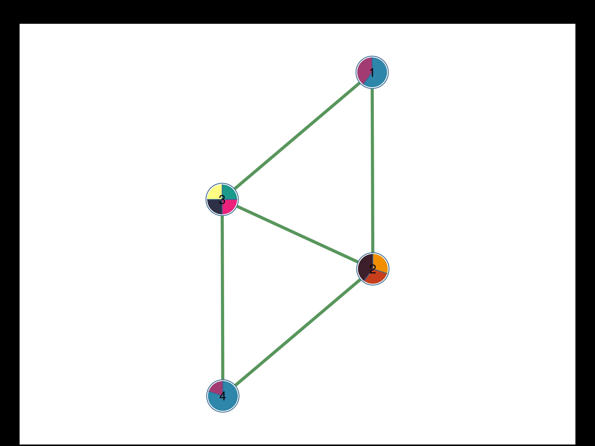
Styling Pie Borders
Customize the border around pie charts using
pie_border_width and node border parameters.
par(mfrow = c(1, 2))
# Standard borders
splot(adj,
pie_values = list(c(0.6, 0.4), c(0.3, 0.3, 0.4),
c(0.25, 0.25, 0.25, 0.25), c(0.8, 0.2)),
node_border_color = "black",
pie_border_width = 2,
node_size = 6,
title = "Dark Borders")
# Colored borders per node
splot(adj,
pie_values = list(c(0.6, 0.4), c(0.3, 0.3, 0.4),
c(0.25, 0.25, 0.25, 0.25), c(0.8, 0.2)),
node_border_color = c("#E41A1C", "#377EB8", "#4DAF4A", "#984EA3"),
node_border_width = 3,
node_size = 6,
title = "Per-Node Colored Borders")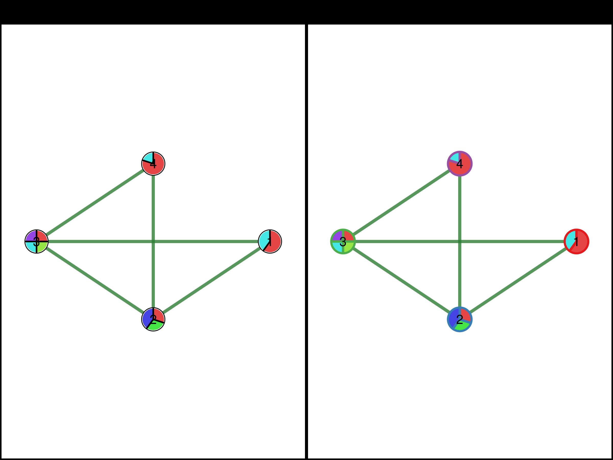
Real-World Example: Category Distributions
# Social network with interest categories
adj <- matrix(c(
0, 1, 1, 0, 1,
1, 0, 1, 1, 0,
1, 1, 0, 1, 1,
0, 1, 1, 0, 1,
1, 0, 1, 1, 0
), nrow = 5, byrow = TRUE)
# Interest distribution per person (Sports, Music, Tech, Art)
interests <- list(
c(0.5, 0.2, 0.2, 0.1), # Person 1: Sports fan
c(0.1, 0.6, 0.1, 0.2), # Person 2: Music lover
c(0.2, 0.1, 0.5, 0.2), # Person 3: Tech enthusiast
c(0.1, 0.2, 0.2, 0.5), # Person 4: Artist
c(0.3, 0.3, 0.2, 0.2) # Person 5: Balanced
)
interest_colors <- c("#E74C3C", "#9B59B6", "#3498DB", "#2ECC71")
splot(adj,
layout = "fr",
pie_values = interests,
pie_colors = rep(list(interest_colors), 5),
node_size = 6,
labels = c("Alex", "Blake", "Casey", "Drew", "Ellis"),
label_size = 0.9,
title = "Social Network: Interest Distributions")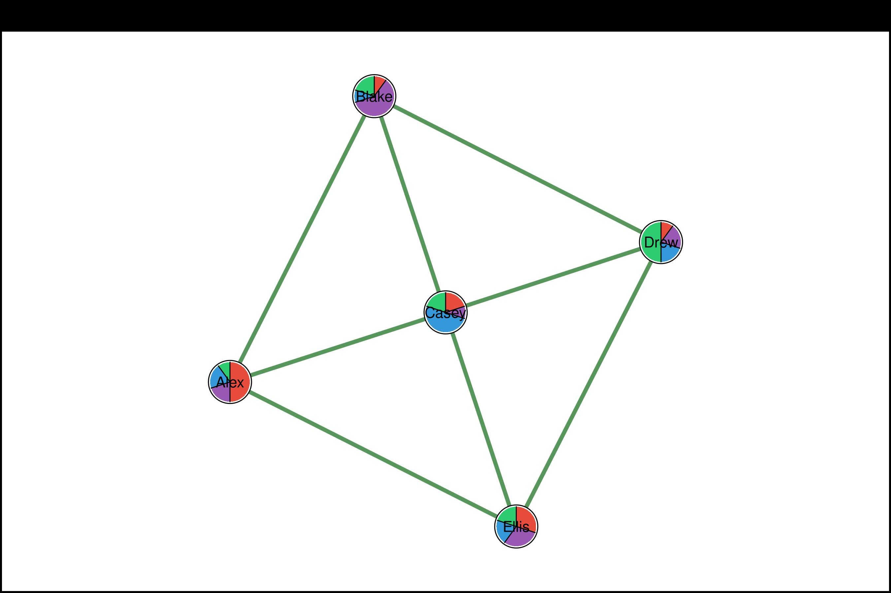
Simple Donut Nodes (Progress Rings)
Simple donuts display a single value (0-1) as a filled ring, perfect for showing progress or completion.
Basic Progress Donuts
Use donut_fill with values between 0 and 1 to show
progress.
adj <- matrix(c(0, 1, 1, 1,
1, 0, 0, 0,
1, 0, 0, 0,
1, 0, 0, 0), nrow = 4, byrow = TRUE)
layout <- matrix(c(0, 0,
-1, 1,
1, 1,
0, -1), nrow = 4, byrow = TRUE)
splot(adj, layout = layout,
donut_fill = c(1.0, 0.75, 0.5, 0.25),
node_size = 7,
labels = c("100%", "75%", "50%", "25%"),
title = "Task Completion Status")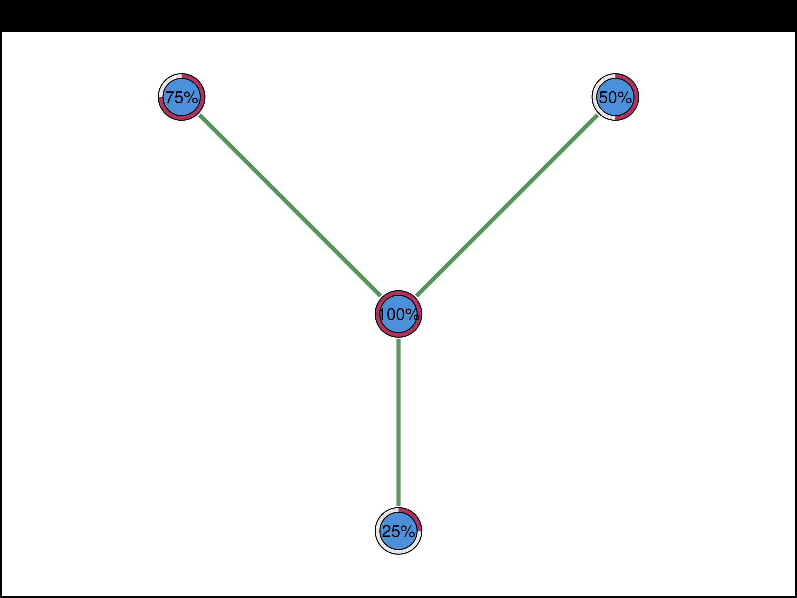
Customizing Donut Colors
# Color by completion level
completion_colors <- c("#27AE60", "#F39C12", "#E74C3C", "#95A5A6")
splot(adj, layout = layout,
donut_fill = c(1.0, 0.75, 0.5, 0.25),
donut_color = completion_colors,
node_size = 7,
labels = c("Done", "Almost", "Halfway", "Starting"),
title = "Completion with Status Colors")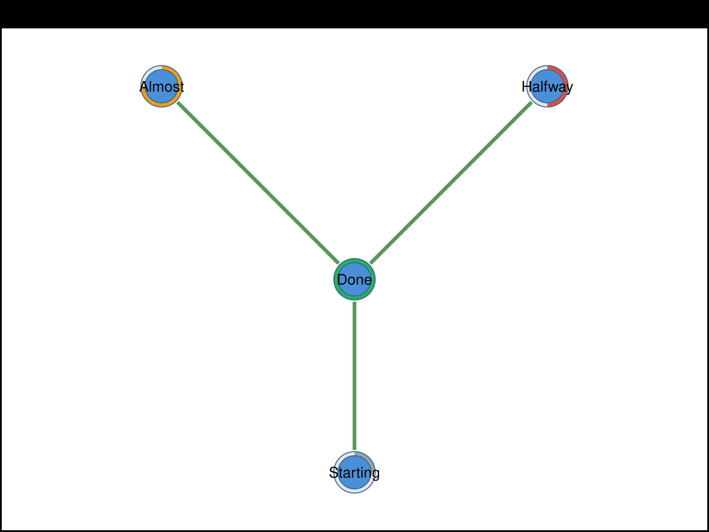
Showing Values in Center
Enable donut_show_value = TRUE to display the numeric
value inside the donut.
splot(adj, layout = layout,
donut_fill = c(0.95, 0.73, 0.48, 0.22),
donut_color = c("#3498DB", "#9B59B6", "#E74C3C", "#1ABC9C"),
donut_show_value = TRUE,
node_size = 7,
title = "Progress Rings with Values")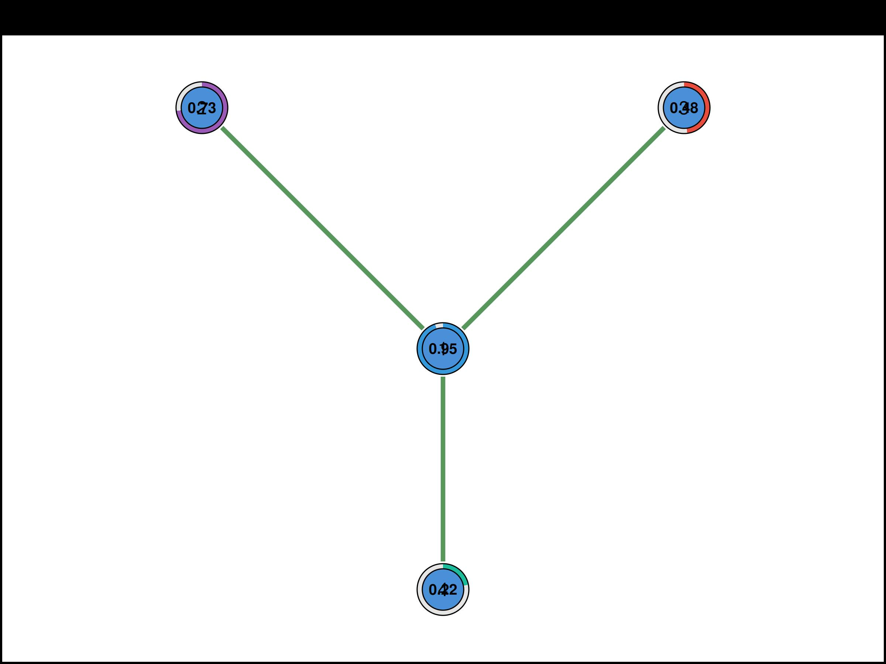
Formatting Displayed Values
Customize value display with prefix, suffix, and digit precision.
par(mfrow = c(1, 3))
# Percentage format
splot(adj, layout = layout,
donut_fill = c(0.95, 0.73, 0.48, 0.22),
donut_show_value = TRUE,
donut_value_suffix = "%",
donut_value_digits = 0,
node_size = 7,
title = "Percentage")
# Prefix format
splot(adj, layout = layout,
donut_fill = c(0.95, 0.73, 0.48, 0.22),
donut_show_value = TRUE,
donut_value_prefix = "$",
donut_value_digits = 0,
node_size = 7,
title = "With Prefix")
# Decimal precision
splot(adj, layout = layout,
donut_fill = c(0.95, 0.73, 0.48, 0.22),
donut_show_value = TRUE,
donut_value_digits = 2,
node_size = 7,
title = "2 Decimal Places")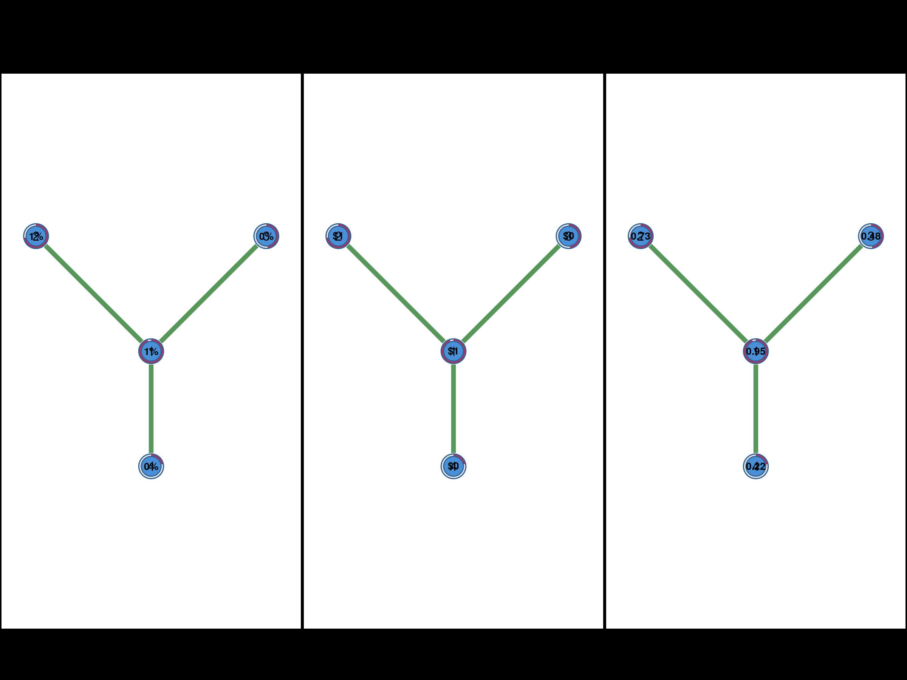
Donut Customization
Controlling Hole Size with donut_inner_ratio
The donut_inner_ratio parameter controls the size of the
inner hole (0 = no hole, 1 = all hole).
par(mfrow = c(1, 4))
for (ratio in c(0.3, 0.5, 0.7, 0.85)) {
splot(adj, layout = layout,
donut_fill = c(0.8, 0.6, 0.9, 0.7),
donut_inner_ratio = ratio,
node_size = 7,
title = paste("Inner Ratio:", ratio))
}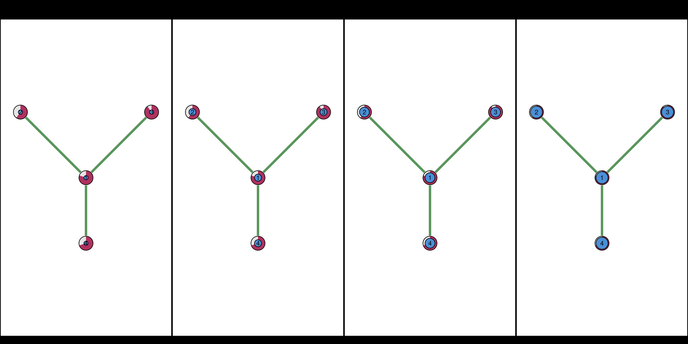
Background Color for Unfilled Portions
Use donut_bg_color to change the color of unfilled donut
sections.
par(mfrow = c(1, 3))
splot(adj, layout = layout,
donut_fill = c(0.7, 0.5, 0.8, 0.6),
donut_bg_color = "#EEEEEE",
node_size = 7,
title = "Light Gray Background")
splot(adj, layout = layout,
donut_fill = c(0.7, 0.5, 0.8, 0.6),
donut_bg_color = "#2C3E50",
node_size = 7,
title = "Dark Background")
splot(adj, layout = layout,
donut_fill = c(0.7, 0.5, 0.8, 0.6),
donut_bg_color = "transparent",
node_size = 7,
title = "Transparent Background")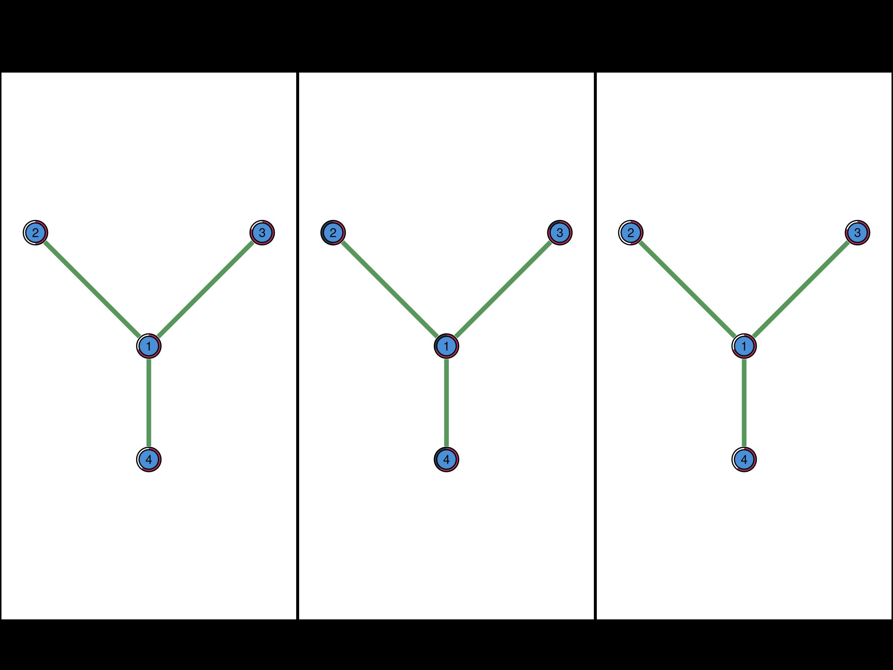
Polygon Shapes with donut_shape
Transform donuts into polygons: hexagon, square, diamond, triangle, or pentagon.
shapes <- c("circle", "hexagon", "square", "diamond", "triangle", "pentagon")
par(mfrow = c(2, 3))
for (shape in shapes) {
splot(adj, layout = layout,
donut_fill = c(0.7, 0.5, 0.9, 0.6),
donut_shape = shape,
donut_color = c("#3498DB", "#E74C3C", "#2ECC71", "#F39C12"),
node_size = 7,
title = paste("Shape:", shape))
}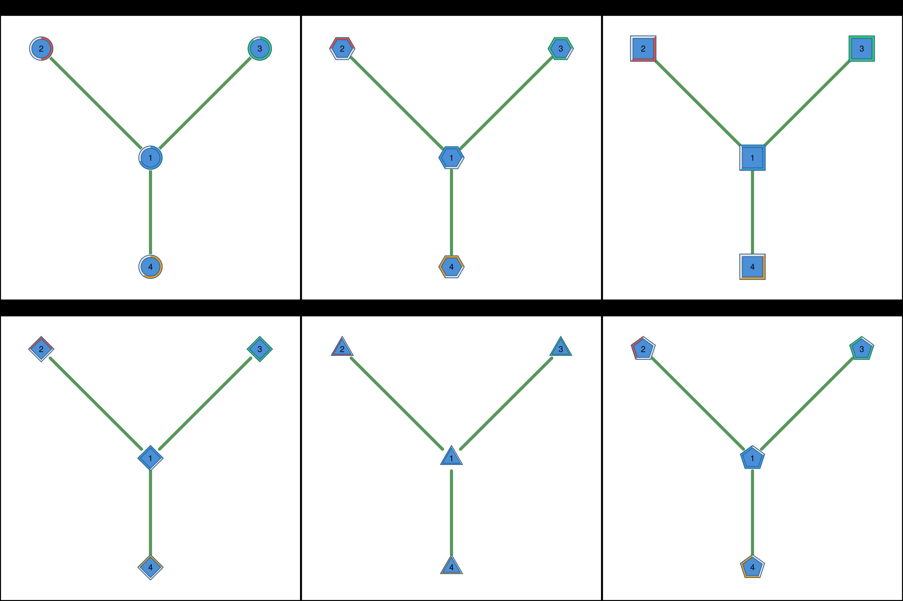
Border Styling (Advanced)
cograph provides extensive border customization options for donut nodes, including double borders and line type patterns.
Single Border Customization
Use donut_border_color to set the border color.
par(mfrow = c(1, 3))
splot(adj, layout = layout,
donut_fill = c(0.7, 0.5, 0.9, 0.6),
donut_border_color = "black",
node_size = 7,
title = "Black Border")
splot(adj, layout = layout,
donut_fill = c(0.7, 0.5, 0.9, 0.6),
donut_border_color = "#E74C3C",
node_size = 7,
title = "Red Border")
# Per-node border colors
splot(adj, layout = layout,
donut_fill = c(0.7, 0.5, 0.9, 0.6),
donut_border_color = c("#E74C3C", "#3498DB", "#2ECC71", "#F39C12"),
node_size = 7,
title = "Per-Node Colors")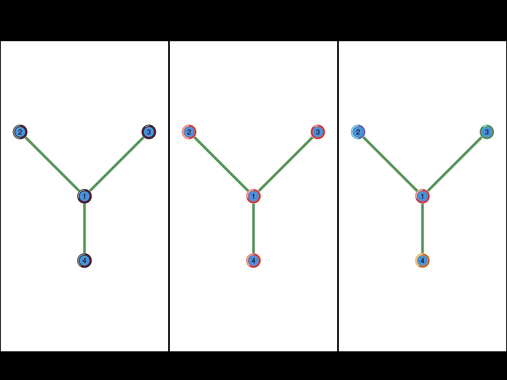
Double Borders with donut_outer_border_color
Create a double-border effect by specifying both inner and outer border colors.
par(mfrow = c(1, 3))
# Classic double border
splot(adj, layout = layout,
donut_fill = c(0.7, 0.5, 0.9, 0.6),
donut_border_color = "white",
donut_outer_border_color = "black",
node_size = 7,
title = "White Inner, Black Outer")
# Colored double border
splot(adj, layout = layout,
donut_fill = c(0.7, 0.5, 0.9, 0.6),
donut_border_color = "#3498DB",
donut_outer_border_color = "#2C3E50",
node_size = 7,
title = "Blue Inner, Dark Outer")
# Per-node double borders
splot(adj, layout = layout,
donut_fill = c(0.7, 0.5, 0.9, 0.6),
donut_border_color = c("#FFD700", "#C0C0C0", "#CD7F32", "#E5E4E2"),
donut_outer_border_color = c("#B8860B", "#808080", "#8B4513", "#71706E"),
node_size = 7,
title = "Gold, Silver, Bronze, Platinum")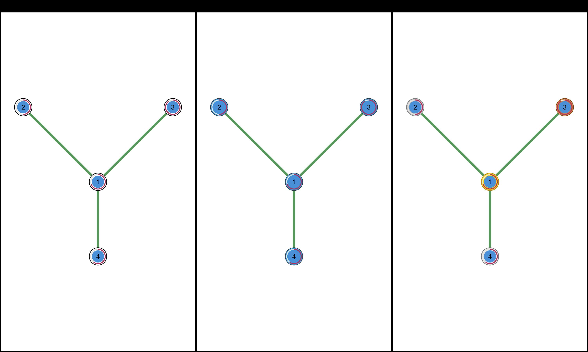
Line Types with donut_border_lty
The donut_border_lty parameter accepts R’s standard line
type values:
| Value | Name | Description |
|---|---|---|
| 0 | “blank” | No line |
| 1 | “solid” | Solid line (default) |
| 2 | “dashed” | Dashed line |
| 3 | “dotted” | Dotted line |
| 4 | “dotdash” | Dot-dash pattern |
| 5 | “longdash” | Long dashes |
| 6 | “twodash” | Two-dash pattern |
lty_values <- c(1, 2, 3, 4, 5, 6)
lty_names <- c("solid", "dashed", "dotted", "dotdash", "longdash", "twodash")
par(mfrow = c(2, 3))
for (i in seq_along(lty_values)) {
splot(adj, layout = layout,
donut_fill = c(0.7, 0.5, 0.9, 0.6),
donut_border_color = "#2C3E50",
donut_border_lty = lty_values[i],
node_size = 7,
title = paste0("lty = ", lty_values[i], " (", lty_names[i], ")"))
}
#> Warning: 'donut_border_lty' is deprecated, use 'donut_line_type' instead.
#> Warning: 'donut_border_lty' is deprecated, use 'donut_line_type' instead.
#> Warning: 'donut_border_lty' is deprecated, use 'donut_line_type' instead.
#> Warning: 'donut_border_lty' is deprecated, use 'donut_line_type' instead.
#> Warning: 'donut_border_lty' is deprecated, use 'donut_line_type' instead.
#> Warning: 'donut_border_lty' is deprecated, use 'donut_line_type' instead.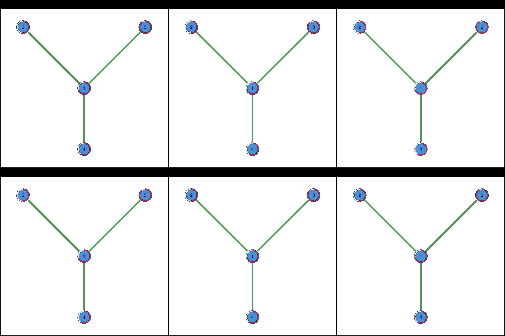
Per-Node Line Types
Assign different line types to individual nodes.
# 5-node network
adj5 <- matrix(c(
0, 1, 1, 0, 0,
1, 0, 1, 1, 0,
1, 1, 0, 1, 1,
0, 1, 1, 0, 1,
0, 0, 1, 1, 0
), nrow = 5, byrow = TRUE)
# Create circle layout manually
n <- 5
angles <- seq(0, 2 * pi, length.out = n + 1)[1:n]
circle_layout <- cbind(cos(angles), sin(angles))
splot(adj5,
layout = circle_layout,
donut_fill = c(0.9, 0.7, 0.5, 0.8, 0.6),
donut_border_color = "#2C3E50",
donut_border_lty = c(1, 2, 3, 4, 5),
node_size = 7,
labels = c("Solid", "Dashed", "Dotted", "DotDash", "LongDash"),
label_size = 0.8,
title = "Per-Node Line Types")
#> Warning: 'donut_border_lty' is deprecated, use 'donut_line_type' instead.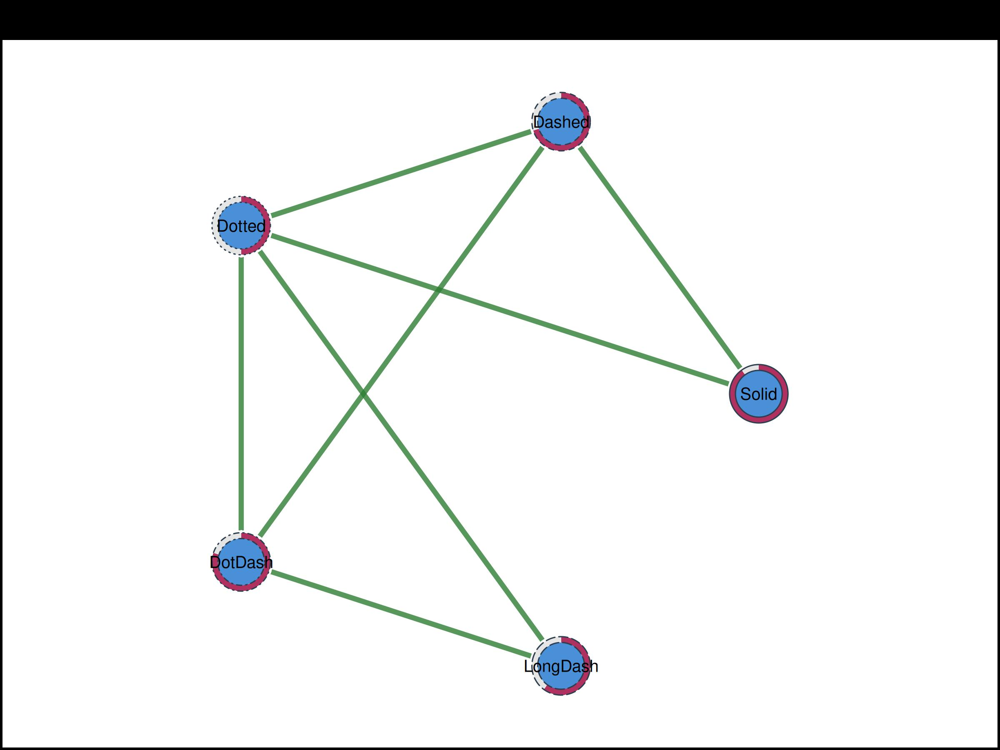
Combining Double Borders with Line Types
par(mfrow = c(1, 2))
# Dashed outer border
splot(adj, layout = layout,
donut_fill = c(0.7, 0.5, 0.9, 0.6),
donut_border_color = "white",
donut_outer_border_color = "#E74C3C",
donut_border_lty = 2,
node_size = 8,
title = "Dashed Double Border")
#> Warning: 'donut_border_lty' is deprecated, use 'donut_line_type' instead.
# Different line types per node
splot(adj, layout = layout,
donut_fill = c(0.7, 0.5, 0.9, 0.6),
donut_border_color = "white",
donut_outer_border_color = c("#E74C3C", "#3498DB", "#2ECC71", "#F39C12"),
donut_border_lty = c(1, 2, 3, 4),
node_size = 8,
title = "Mixed Line Types")
#> Warning: 'donut_border_lty' is deprecated, use 'donut_line_type' instead.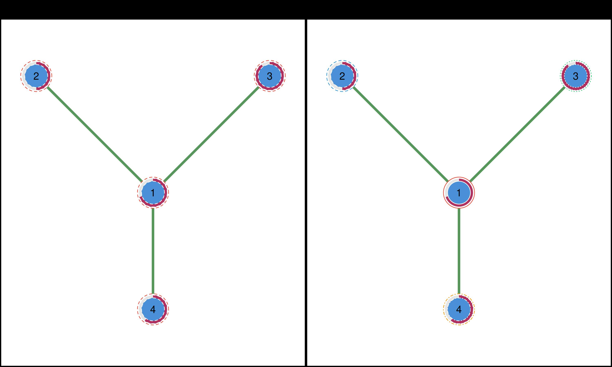
Donut + Pie Combinations
For truly data-rich visualizations, combine donut rings with inner pie charts or use multiple donut layers.
Outer Donut Ring with Inner Pie Chart
Use both donut_fill AND pie_values
together.
adj3 <- matrix(c(0, 1, 1,
1, 0, 1,
1, 1, 0), nrow = 3, byrow = TRUE)
layout3 <- matrix(c(-1, 0, 1, 0, 0, 1), nrow = 3, byrow = TRUE)
splot(adj3, layout = layout3,
# Outer donut: progress/completion
donut_fill = c(0.75, 0.5, 0.9),
donut_color = c("#3498DB", "#E74C3C", "#2ECC71"),
donut_inner_ratio = 0.65,
# Inner pie: category breakdown
pie_values = list(
c(0.5, 0.3, 0.2),
c(0.3, 0.4, 0.3),
c(0.2, 0.2, 0.6)
),
pie_colors = list(
c("#F39C12", "#8E44AD", "#1ABC9C"),
c("#F39C12", "#8E44AD", "#1ABC9C"),
c("#F39C12", "#8E44AD", "#1ABC9C")
),
node_size = 8,
title = "Donut (Progress) + Pie (Categories)")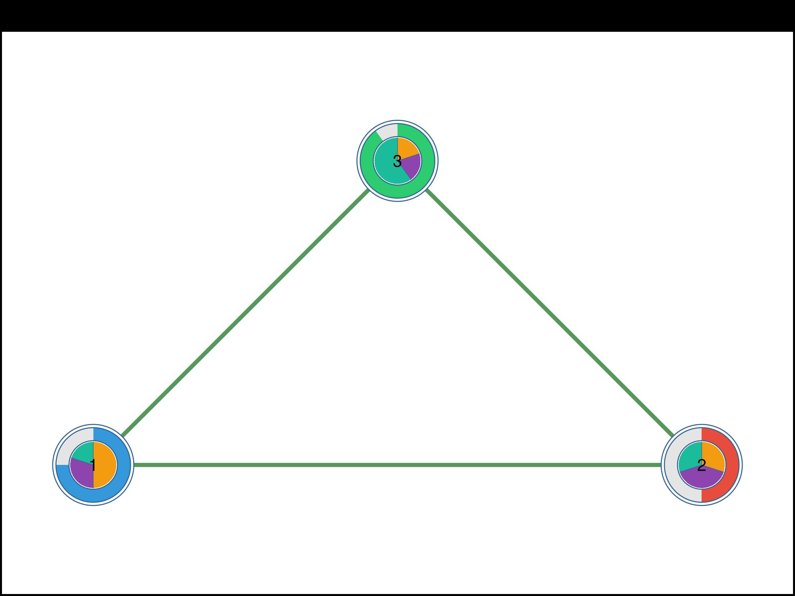
Double Donut Configuration
Layer two donut rings by using both segmented donuts and progress donuts creatively.
# Use segmented outer donut with a simple fill creating a visual double effect
splot(adj3, layout = layout3,
pie_values = list(
c(0.4, 0.35, 0.25),
c(0.5, 0.3, 0.2),
c(0.3, 0.3, 0.4)
),
pie_colors = list(
c("#E74C3C", "#3498DB", "#2ECC71"),
c("#E74C3C", "#3498DB", "#2ECC71"),
c("#E74C3C", "#3498DB", "#2ECC71")
),
donut_fill = c(0.8, 0.6, 0.95),
donut_inner_ratio = 0.55,
donut_border_color = "white",
donut_outer_border_color = "#2C3E50",
node_size = 8,
title = "Segmented Donut + Inner Pie")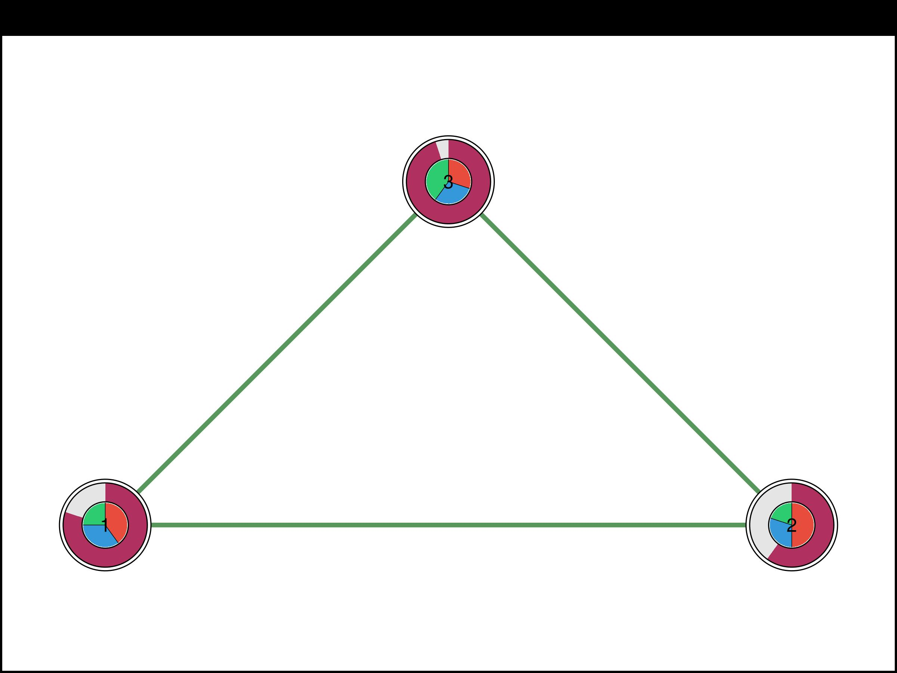
Real-World Examples
Example 1: Project Completion Dashboard
# Project dependency network
proj_adj <- matrix(c(
0, 1, 1, 0, 0,
0, 0, 0, 1, 0,
0, 0, 0, 1, 1,
0, 0, 0, 0, 1,
0, 0, 0, 0, 0
), nrow = 5, byrow = TRUE)
# Layout suggesting flow
proj_layout <- matrix(c(
-2, 0, # Start
-1, 0.5, # Phase 1
-1, -0.5, # Phase 2
0, 0, # Integration
1, 0 # Deploy
), nrow = 5, byrow = TRUE)
# Completion percentages
completion <- c(1.0, 0.85, 0.6, 0.3, 0.0)
# Color by status
status_colors <- c("#27AE60", "#2ECC71", "#F39C12", "#E74C3C", "#95A5A6")
splot(proj_adj, layout = proj_layout,
donut_fill = completion,
donut_color = status_colors,
donut_show_value = TRUE,
donut_value_suffix = "%",
donut_value_digits = 0,
donut_border_color = "white",
donut_outer_border_color = "#2C3E50",
node_size = 6,
labels = c("Start", "Phase 1", "Phase 2", "Integrate", "Deploy"),
label_size = 0.85,
arrow_size = 0.5,
title = "Project Completion Dashboard")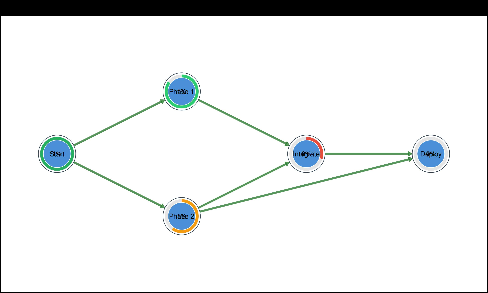
Example 2: Team Skills Network
# Team collaboration network
team_adj <- matrix(c(
0, 1, 1, 1,
1, 0, 1, 0,
1, 1, 0, 1,
1, 0, 1, 0
), nrow = 4, byrow = TRUE)
# Skill breakdown: Frontend, Backend, Data, DevOps
skill_colors <- c("#3498DB", "#E74C3C", "#2ECC71", "#F39C12")
skills <- list(
c(0.1, 0.4, 0.4, 0.1), # Alice: Backend + Data
c(0.5, 0.2, 0.1, 0.2), # Bob: Frontend
c(0.2, 0.2, 0.4, 0.2), # Carol: Data focused
c(0.1, 0.3, 0.1, 0.5) # Dan: DevOps
)
splot(team_adj,
layout = "circle",
pie_values = skills,
pie_colors = rep(list(skill_colors), 4),
donut_fill = c(0.9, 0.7, 0.8, 0.85),
donut_inner_ratio = 0.5,
donut_border_color = "white",
node_size = 7,
labels = c("Alice", "Bob", "Carol", "Dan"),
label_size = 1.0,
title = "Team Skills Distribution")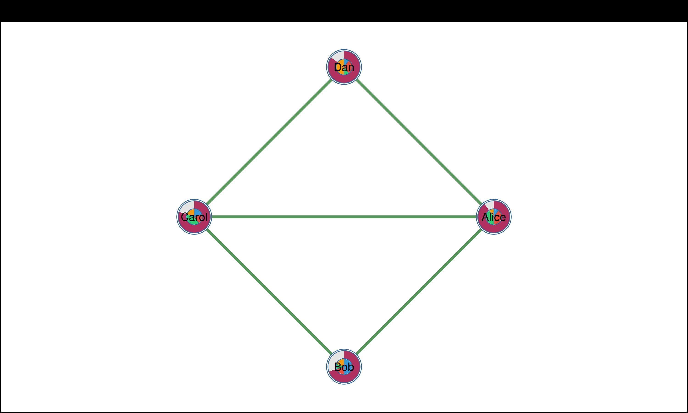
Example 3: Multi-Metric Node Visualization
# 3-node comparison
comp_adj <- matrix(c(0, 1, 1, 1, 0, 1, 1, 1, 0), nrow = 3, byrow = TRUE)
comp_layout <- matrix(c(-1, 0, 1, 0, 0, 1), nrow = 3, byrow = TRUE)
# Outer donut: Overall score
# Inner pie: Score breakdown (Quality, Speed, Cost)
splot(comp_adj, layout = comp_layout,
# Outer: Overall performance (0-1)
donut_fill = c(0.85, 0.65, 0.92),
donut_color = c("#2980B9", "#C0392B", "#27AE60"),
donut_inner_ratio = 0.6,
donut_border_color = "white",
donut_outer_border_color = "#2C3E50",
donut_border_lty = c(1, 2, 1), # Dashed for middle node
# Inner: Breakdown
pie_values = list(
c(0.4, 0.3, 0.3), # Balanced
c(0.2, 0.5, 0.3), # Speed focused
c(0.5, 0.2, 0.3) # Quality focused
),
pie_colors = rep(list(c("#F1C40F", "#9B59B6", "#1ABC9C")), 3),
node_size = 8,
labels = c("Product A", "Product B", "Product C"),
label_position = "below",
title = "Product Comparison: Overall Score + Breakdown")
#> Warning: 'donut_border_lty' is deprecated, use 'donut_line_type' instead.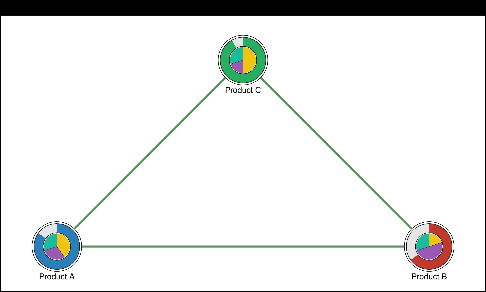
Parameter Reference
Pie Chart Parameters
| Parameter | Type | Default | Description |
|---|---|---|---|
pie_values |
list | NULL | List of numeric vectors with proportions per node |
pie_colors |
list/vector | Default palette | Colors for pie segments |
pie_border_width |
numeric | NULL | Border width for pie slice dividers |
Donut Parameters
| Parameter | Type | Default | Description |
|---|---|---|---|
donut_fill |
numeric | NULL | Single values (0-1) for progress donuts |
donut_color |
vector | Default palette | Colors for donut segments |
donut_inner_ratio |
numeric | 0.5 | Size of inner hole (0-1) |
donut_bg_color |
character | “#EEEEEE” | Background for unfilled portions |
donut_shape |
character | “circle” | Shape: circle, hexagon, square, diamond, triangle, pentagon |
donut_show_value |
logical | FALSE | Display value in center |
donut_value_prefix |
character | “” | Prefix for displayed value |
donut_value_suffix |
character | “” | Suffix for displayed value |
donut_value_digits |
integer | 2 | Decimal places for displayed value |
donut_empty |
logical | TRUE | Render empty rings for NA values |
Donut Border Parameters
| Parameter | Type | Default | Description |
|---|---|---|---|
donut_border_color |
character | “black” | Inner border color |
donut_border_width |
numeric | NULL | Border width (uses node_border_width if NULL) |
donut_outer_border_color |
character | NULL | Outer border color (enables double border) |
donut_border_lty |
numeric/character | 1 | Line type: 0-6 or “blank”, “solid”, etc. |
Conclusion
cograph’s pie and donut node features transform simple network diagrams into rich, multi-dimensional visualizations. Whether you need to show completion status, category breakdowns, or multiple metrics per node, these tools provide the flexibility to create exactly the visualization you need.
Key takeaways:
- Pie charts are ideal for showing composition/category data
- Simple donuts excel at progress/completion metrics
- Double borders and line types add visual hierarchy
- Combinations (donut + pie) enable multi-metric displays
- Custom shapes (hexagon, square, etc.) provide visual variety
For more examples and advanced usage, see the package documentation
with ?splot or visit the cograph GitHub repository.